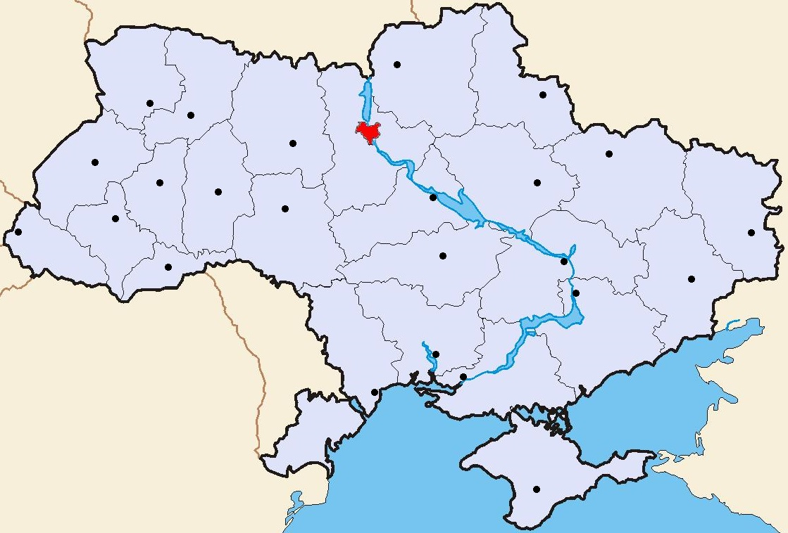

Канал прогнозу погоди для свого міста
Клікніть по назві міста, щоб перейти на канал прогнозу погоди:

Вінниця
Дніпро
Донецьк
Житомир
Запоріжжя
Івано-
Франківськ
Київ
Кропивницький
Луганськ
Луцьк
Львів
Миколаїв
Одеса
Полтава
Рівне
Сімферополь
Суми
Тернопіль
Ужгород
Харків
Херсон
Хмельницький
Черкаси
Чернівці
Чернігів
Захід:
Івано-Франківськ
Луцьк
Львів
Рівне
Тернопіль
Ужгород
Хмельницький
Чернівці
Центр:
Вінниця
Дніпро
Запоріжжя
Кропивницький
Полтава
Черкаси
Північ:
Житомир
Київ
Суми
Чернігів
Південь:
Миколаїв
Одеса
Сімферополь
Херсон
Схід:
Донецьк
Луганськ
Харків
Serhii Holovko,
+38 093 119 66 77
,
holovko.s@gmail.com